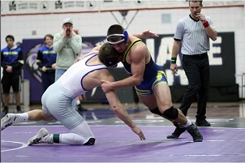

Preston Idaho
Weather Summary
Temperature:
Wind Chill:
Humidity:
Wind Speed:
Five-Day Weather Forecast
Prep wrestling: Preston's Keller captures 4A state title
Ever since he was a freshman, Preston wrestler Caigun Keller has been talented enough leave the 4A State Championships with a medal. Unfortunately for Keller, he was never quite able to put it all together at state as a freshman, sophomore and junior. To his credit, though, the three-time district champion was undaunted, continued the grind and it paid off in a big way during the 2021-22 campaign. Keller capped off a 52-4 senior season by pinning Blackfoot standout Austin Ramirez in the finals of the 152-pound weight class at the 4A State Championships, which concluded Saturday at Holt Arena in Pocatello. The second-seeded Keller won all four of his matches at the tournament in convincing fashion. “I’ve been wrestling since I was around the age of six, meaning this state championship has been 12 years in the making,” Keller said. “Those 12 years...
continue reading📧askus@everythingpreston.org
📞 123-555-6789